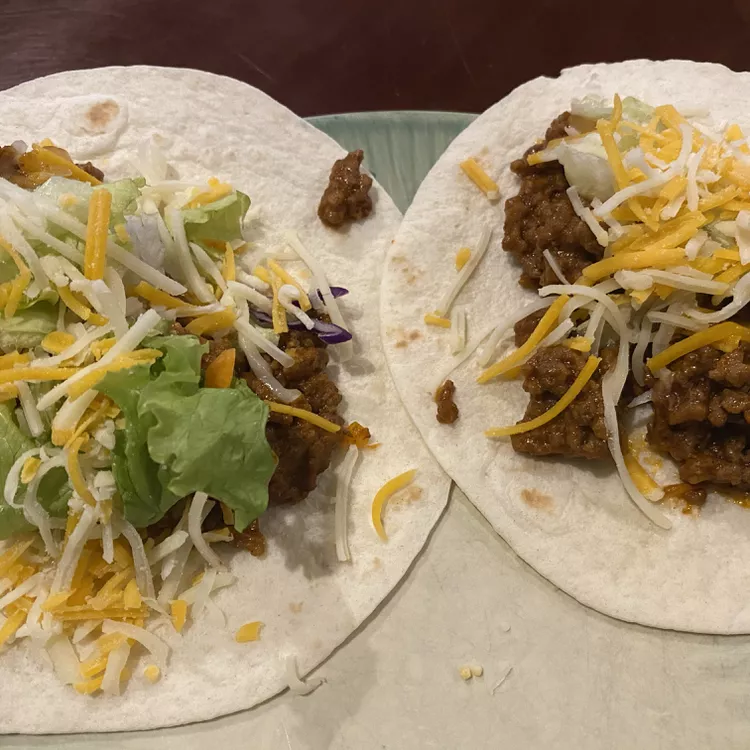

Easy Tacos

Simple and easy tacos to make for the family!
This is a simple and easy dish to quickly prepare for the family
with the flavor from Mexican-style tomato soup. This can be prepared
in under 25 minutes!
Ingredients
- 2 pounds ground beef
- salt and pepper
- 1 carton Campbell's Mexican-style tomato soup
- 12 taco shells, warmed
- 3/4 cup shredded lettuce
- 3/4 cup diced tomato
- 1/3 cup shredded cheddar cheese
- Cook and stir beef until brown
- Stir soup into skillet and bring to boil. Reduce heat to low until
soup is reduced.
- Divide beef mixture among taco shells. Top with lettuce, tomato, and cheese.